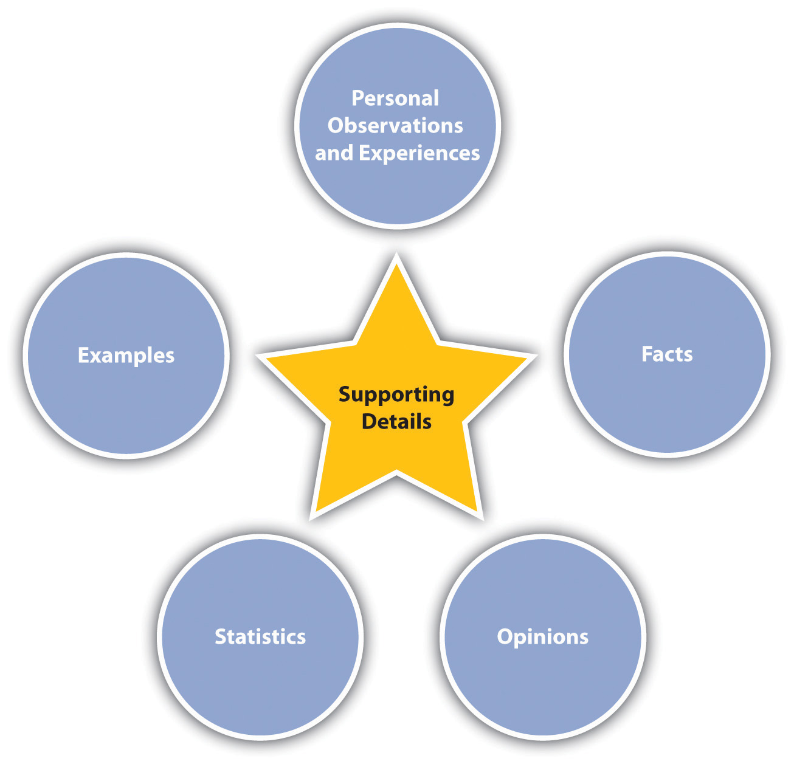
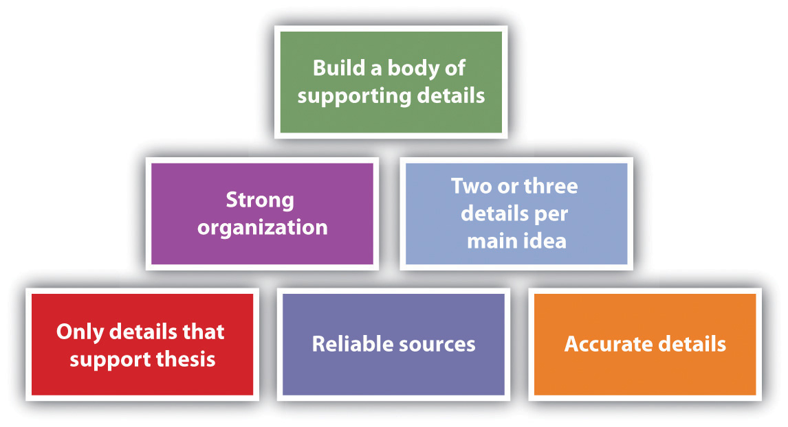

Once you have created a map or outline or gathered your ideas in another way, you might think that the hardest part of the writing project is over, so now you can just follow your plan. However, the drafting process is actually much more complicated than that. You need to pay attention and think while you are writing and reading about your topic, so you notice meaningful changes you can make in your plan. You should continue to generate questions throughout the drafting and revising process. Even though you have a chosen topic, you need to formulate, support, and test your thesis (or main idea) and be prepared to modify it significantly in the face of new evidence or a change in your attitude toward the topic. You will also need to strive for an interesting, varied, appropriate, and mechanically sound approach to the paragraphs and sentences that will make up your essay.
Most academic writing includes a thesis, which is the main stance you decide to take toward your topic. Your thesis tells readers what your paper will be about. It also serves as a target you must ultimately hit as you write, though that target may move around quite a bit as you go through the drafting process. You might have an idea about your thesis early on, or you might only decide upon it once you have worked with your topic and plan for a while. You might continually tweak your thesis as you learn more and develop your opinions about your topic. This table shows how topics and personal stances relate:
| Topic | Personal Stance |
|---|---|
| College students’ schedules | College students’ schedules should be set by the students, not by their parents. |
| Fallen logs in national parks | Fallen logs in national parks should be harvested rather than left to decay and increase the likelihood of forest fires. |
Developing your personal stance is critical for several reasons. It narrows your topic to a final manageable level, and it makes the written work uniquely yours. Taking a personal stance gives you a point of view to develop, support, and defend. When you present your stance, it ultimately awakens emotions in your readers as they determine for themselves whether they agree or disagree with your stance.
If you have trouble deciding on a thesis, keep in mind that your thesis ties directly to the main purpose and audience of your writing project. It is the main point you want to make to your audience. Ask yourself how you personally relate to the topic. Take the college students’ schedules topic, for example. Your response to how you are personally related to the topic could be one of the following:
Once you see how you personally relate to your topic, you can then more clearly see what stance you want to take. Once you take a stance, work on wording it effectively, and you will have a working thesis.
For each of the following topics, think of a personal stance that might work for a thesis:
Now that you have formed your working thesis, you are ready to test it. The purpose of the test is to satisfy yourself that your thesis will work well. To test your satisfaction, answer the following questions. Read the tips if you need some help answering the questions.
Question #1: Is your proposed thesis interesting?
Tip: When you read the thesis statement, do you find yourself wondering about different aspects of the topic? In other words, do you want to know the answer to the thesis question? Do you think others will also want to know?
Question #2: Is your proposed thesis arguable?
Tip: If you are writing an argumentative essay and developing a thesis for a topic that is controversial, make sure you can also formulate in your head what the thesis for “the other side” would sound like.
Question #3: Is your proposed thesis specific enough?
Tip: Make certain that your thesis addresses a specific point about a specific person, place, idea, or situation. Do not proceed with vague wording, such as “all over the world,” “many people,” or “will cause problems.” Avoid relying too much on qualitative, superlative, or hyperbolic language, such as excellent, awesome, interesting, sad, or silly. Such words do not carry any concrete meaning.
Question #4: Is your proposed thesis manageable?
Tip: If you would have to research for two solid months to cover the breadth of the thesis, it is not suitable for a five-page paper. On the other hand, if a reader can understand the whole point simply by reading the thesis, the thesis is not suitable.
Question #5: Is your proposed thesis researchable?
Tip: Make sure you are confident that you will be able to find the information you need. Proceeding when you think you will have trouble finding enough information can cost you a lot of time if you come to a point where you think you have to start over.
Question #6: Is your proposed thesis significant to you and others?
Tip: If you choose a thesis that you care deeply about, others are likely to also find it significant. After you determine that your thesis is something about which you care deeply, you should double-check that your desired audience will also care.
After you have chosen a topic and a thesis and have begun work on the essay, you will be invested in your idea, so it won’t be as easy to answer these questions objectively. But doing so early on is worth the effort since the process will likely result in a more successful essay in the long run.
Each of the following six thesis-testing questions is followed by two sample theses. In each case, choose the thesis for which the answer to the question is “yes.” Explain why the option that wasn’t chosen does not receive a “yes” answer.
Is your proposed thesis interesting?
Is your proposed thesis arguable?
Is your proposed thesis specific?
Is your proposed thesis manageable?
Is your proposed thesis researchable?
Is your proposed thesis significant?
Supporting your thesis is the overall goal of your whole paper. It means presenting information that will convince your readers that your thesis makes sense. You need to take care to choose the best supporting details for your thesis.
Figure 6.1
You can and should use a variety of kinds of support for your thesis. One of the easiest forms of support to use is personal observations and experiences. The strong point in favor of using personal anecdotes is that they add interest and emotion, both of which can pull audiences along. On the other hand, the anecdotal and subjective nature of personal observations and experiences makes them too weak to support a thesis on their own.
Since they can be verified, facts can help strengthen personal anecdotes by giving them substance and grounding. For example, if you tell a personal anecdote about having lost twenty pounds by using a Hula-Hoop for twenty minutes after every meal, the story seems interesting, but readers might not think it is a serious weight-loss technique. But if you follow up the story with some facts about the benefit of exercising for twenty minutes after every meal, the Hula-Hoop story takes on more credibility. Although facts are undeniably useful in writing projects, a paper full of nothing but fact upon fact would not be very interesting to read.
Like anecdotal information, your opinions can help make facts more interesting. On their own, opinions are weak support for a thesis. But coupled with specific relevant facts, opinions can add a great deal of interest to your work. In addition, opinions are excellent tools for convincing an audience that your thesis makes sense.
Similar to your opinions are details from expert testimony and personal interviews. Both of these kinds of sources provide no shortage of opinions. Expert opinions can carry a little more clout than your own, but you should be careful not to rely too much on them. However, it’s safe to say that finding quality opinions from others and presenting them in support of your ideas will make others more likely to agree with your ideas.
Statistics can provide excellent support for your thesis. Statistics are facts expressed in numbers. For example, say you relay the results of a study that showed that 90 percent of people who exercise for twenty minutes after every meal lose two pounds per week. Such statistics lend strong, credible support to a thesis.
ExamplesChoices of details used to clarify a point for readers.—real or made up—are powerful tools you can use to clarify and support your facts, opinions, and statistics. A detail that sounds insignificant or meaningless can become quite significant when clarified with an example. For example, you could cite your sister Lydia as an example of someone who lost thirty pounds in a month by exercising after every meal. Using a name and specifics makes it seem very personal and real. As long as you use examples ethically and logically, they can be tremendous assets. On the other hand, when using examples, take care not to intentionally mislead your readers or distort reality. For example, if your sister Lydia also gave birth to a baby during that month, leaving that key bit of information out of the example would be misleading.
You are likely to find or think of details that relate to your topic and are interesting, but that do not support your thesis. Including such details in your paper is unwise because they are distracting and irrelevant.
In today’s rich world of technology, you have many options when it comes to choosing sources of information. Make sure you choose only reliable sources. Even if some information sounds absolutely amazing, if it comes from an unreliable source, don’t use it. It might sound amazing for a reason—because it has been amazingly made up.
Figure 6.2
When you find a new detail, make sure you can find it in at least one more source so you can safely accept it as true. Take this step even when you think the source is reliable because even reliable sources can include errors. When you find new information, make sure to put it into your essay or file of notes right away. Never rely on your memory.
Take great care to organize your supporting details so that they can best support your thesis. One strategy is to list the most powerful information first. Another is to present information in a natural sequence, such as chronologicalA method of narrative arrangement that places events in their order of occurrence. order. A third option is to use a compare/contrastA writing pattern used to explain how two (or more) things are alike and different. format. Choose whatever method you think will most clearly support your thesis.
Make sure to use at least two or three supporting details for each main idea. In a longer essay, you can easily include more than three supporting details per idea, but in a shorter essay, you might not have space for any more.
Choose a topic of interest to you. Write a personal observation or experience, a fact, an opinion, a statistic, and an example related to your topic. Present your information in a table with the following headings.
| Topic: | |
|---|---|
| Personal observation or experience | |
| Fact | |
| Opinion | |
| Statistic | |
| Example |
Choose a topic of interest to you. On the Internet, find five reliable sources and five unreliable sources and fill in a table with the following headings.
| Topic: | |||
| Reliable Sources | Why Considered Reliable | Unreliable Sources | Why Considered Unreliable |
As you start writing, you are likely to discover that your ideas don’t always come together as you expected. The following list gives some examples of types of unexpected situations you might encounter:
If you pay attention to your thoughts while you write, you are likely to find that your thoughts can lead to more good ideas. In other words, maintain constant critical inquiry about your content, your formatting, and your relationship to your main topic.
Some people tend to “write in the moment” without paying close attention to what they wrote a page ago or what they intend to write on the next page. If you are a person who tends to wander in this way, you should periodically stop and step back to consider how your writing direction is going.
As you write, make notes of all the points that come to your mind as they come so you don’t lose any of them before you can fully incorporate them into your writing or decide if you want to incorporate them.
It would probably not surprise you if your professor told you to read your research sources carefully and critically and with an open mind. It simply sounds like a logical, good idea. But how do you know if and when you are reading carefully and critically? Do you really know how to read with an open mind?
These are important questions to consider even when you can easily find what appears to be objective, unbiased, unfiltered information about your topic. Let’s return to the idea (from Chapter 1 "Writing to Think and Writing to Learn", Chapter 2 "Becoming a Critical Reader", Chapter 3 "Thinking through the Disciplines", and Chapter 4 "Joining the Conversation") about reading closely and carefully. Some sources for a writing assignment can be less than thrilling, so your mind might wander a bit or you might speed-read without really focusing. Reading without your full attention or speeding through the text without taking it in not only is a waste of your time but also can lead to critical errors. To use your time wisely, you should try some techniques for getting the most out of your reading. Anything that gets you physically involved, mentally involved, or both will probably help, such as the following ideas:
Once you are reading carefully, you are in the proper position to also read critically. To read critically does not mean to judge severely. Rather, it means to determine what the author’s intent or assumptions are, if the author’s points are adequate to support the intent or assumptions, and if the conclusions work. You have to decide what sense the text makes and whether the information in it will help support the points you are trying to make (or perhaps complicate them or even contradict them).
One key roadblock that can get in the way of reading critically is letting personal ideas and opinions cloud your judgment. To avoid this possible problem, you need to do your best to read your possible sources with an open mind. Don’t slam a door before you really know what’s behind it.
Along with reading other sources carefully, critically, and with an open mind, you should also apply these techniques to your work. By reading your work carefully as you are writing, you will see things you want to change. By reading your work critically and with an open mind, you can get a sense for the parts that are working well and those that aren’t.
Choose a text you are reading for this course or for another course. Make sure the text includes some opinions that you do not hold, that are new or unfamiliar to you, or both. Print or copy the text so you can mark it up if needed to answer the following questions:
Create a three-column table with the following headings. For each idea in the first column, record your opinion and the opinion presented in the article.
| New or unfamiliar ideas or ideas with which you disagree | Your opinions | Opinions presented in the article |
Even after you have your core plan in place and start to do some initial research, you should still be very flexible with your plan and let your research and critical thinking guide you. You can help solidify your plan by continually and repeatedly asking questions at all stages of the writing process. Some possible questions follow:
Every time you make some adjustments to your topic, audience, purpose, or form, ask these same questions again until you stop adjusting and stop getting different answers to the questions.
Discuss how you would write a descriptive, informative essay for the following audiences on a subject in which you have a passionate interest:
Discuss how would you approach writing a descriptive, informative essay on the following subjects for the third audience listed in question 1 (people who know absolutely nothing about the subject and who might even be a little hostile toward it):
Let’s say you have a specific topic and audience in mind, category (a) from questions 1 and 2: people who share your passion for and knowledge about violent video games. Discuss how your plan for an essay would change based on the following purposes:
Varied sentences help create more interesting prose. Two key methods of varying your sentences are to use different starting techniques and to change the sentences from within. These two choices have some overlap, but for clarity, we’ll discuss them as separate options here.
You have all read “The…The…The” and “There…There…There” and “I…I…I” texts. When almost every sentence of a text begins exactly alike, it develops a boring and monotonous rhythm. As a rule, within a given paragraph, you should try to avoid starting more than two sentences with the same word.
The need for varied sentence formats is a little less obvious but along the same lines. Even if you are starting all your sentences with different words, you could still fall into the trap of having every sentence use the same format, thus creating a similarly monotonous rhythm. Typical examples are sentences that all follow the simple subject format of subject–verb–object. Consider the sing-songy rhythm in this example:
Rover had a bone. Princess wanted it. He snarled at Princess. She snarled at Rover. Princess looked to her left. Rover followed her eyes. Princess snatched the bone. Rover started barking.
In the (rather extreme) example, no more than two sentences within the paragraph begin with the same word, but the sentence is still too rhythmic due to the similar format of each simple sentence.
One technique that will help you avoid using the same format is to make a conscious effort to vary your sentence constructions. Consider how the following formats provide interesting variation.
| Sentence Constructions | Examples |
|---|---|
| Opening adverb | Slyly, Princess snatched the bone while Rover was looking away. |
| Conjunctive adverb | Rover thought he was guarding his bone; however, Princess was setting up her moment. |
| Coordinating conjunction | Rover had the bone, but Princess was determined to get it. |
| Dependent clause | While Rover was looking away, Princess snatched the bone. |
| Introductory phrase | Feeling jealous, Princess made a plan to get the bone. |
Along with changing the beginnings of sentences, you can add variety by combining sentences, adding words, expanding descriptionsDepicting something so that readers can get a clear impression. or ideas, and creating and moving clauses. Using all these techniques throughout a paper will create a nice mix of sentence formats.
Choosing exactly the right mix of sentence lengths can be challenging. If you use too many short sentences, your writing will be viewed as simplistic. If you use too many long sentences, your writing will be considered convoluted. Even if you use all medium-length sentences, your writing might be dubbed as monotonous. The trick is to use a variety of sentence lengths. If you find you have too many short, choppy sentences, you can combine some of them to add a little variety.
| Two short, choppy sentences | Combined sentence |
|---|---|
| He snarled at Princess. She snarled at Rover. | Rover snarled at Princess, but she proved to be the alpha dog by snarling right back at him. |
You can add variety and interest to your sentences by adding words to expand the sentences. This suggestion in no way means to add meaningless words to a sentence just to enlarge and change the sentence. Only add words when they add value to your work.
| A short sentence | Value-adding words added to a short sentence |
|---|---|
| Rover had a bone. | Rover was gnawing on a bone in the corner of the yard under the cherry tree. |
This tactic is more specific than the “add words” tactic, but it can be coupled with it.
| An existing sentence | Expanded descriptions and ideas |
|---|---|
| Rover was gnawing on a bone in the corner of the yard under the tree. | My Lab, Rover, was gnawing on a rawhide bone in the corner of the yard under the cherry tree. |
Adding new clauses or moving existing clauses is another way to add interest and variety.
| Sentence with a clause | Sentence with the clause moved |
|---|---|
| Rover was a large Labrador, and Princess was a small poodle who got the best of him. | Although Princess was a small poodle, she got the best of Rover, a large Labrador. |
Rewrite the following paragraph using some of the sentence variation ideas in this section. After you are finished rewriting, identify the types of changes you made:
My family went on vacation. It was the summer after my first year of college. It was odd not to be in charge of my own actions. My parents were nice but always in charge. My brother and sister were fine with it. It wasn’t OK with me, though. It wasn’t OK with me to have to go to bed at 10:00 p.m. My idea would have been to go to town then. My parents said it was bedtime since we had to get up early to go hiking. It wasn’t my idea to go walking early! My next vacation might be with friends. It will be nice to go with my family again as long as it isn’t too soon.
Rewrite this sentence so that it begins with an adverb:
My roommate found my cell phone.
Rewrite this sentence so that it begins with an introductory phrase:
It is a long, interesting drive.
Each paragraph in a piece of writing has to function well independently so that the work as a whole comes together. This section presents a variety of ideas you should think about and methods you should consider using when writing paragraphs.
Each paragraph needs to start with an introduction, a transition, or a combination of the two. The first sentence of a paragraph always has to help a reader move smoothly from the last paragraph. Sometimes two paragraphs are close enough in content that a transition can be implied without actually using transition words. Other times, specific transitions are needed. When no transition is used, an introductory sentence is needed so the reader knows what is going on. If a transition sentence is used, it is logical to follow it with an introductory sentence or to have one joint sentence.
Here are some examples:
By definitionClarification of key words or concepts., all sentences in the paragraph should relate to one main idea. If another main idea comes up as you are drafting a paragraph, it is most likely time to start a new paragraph. If in revising a draft you notice that a paragraph has wandered into another main idea, you should consider splitting it into two paragraphs. The main idea should be clear and obvious to readers and is typically presented within the topic sentence. The topic sentence is, in essence, a one-sentence summary of the point of the paragraph. The topic sentence is often the first sentence in a paragraph, but it does not have to be located there.
While the main idea is presented within the topic sentenceA sentence that presents the main idea of a paragraph., the rest of the sentences in the paragraph support it. The other sentences should present details that clarify and support the topic sentence. Together, all the sentences within the paragraph should flow smoothly so that readers can easily grasp its meaning.
When you choose sentences and ideas to support the topic sentence, keep in mind that paragraphs should not be overly long or overly short. A half page of double-spaced text is a nice average length for a paragraph. At a minimum, unless you are aiming for a dramatic effect, a paragraph should include at least three sentences. Although there is really no maximum size for a paragraph, keep in mind that lengthy paragraphs create confusion and reading difficulty. For this reason, try to keep all paragraphs to no more than one double-spaced page (or approximately 250 words).
Many of the same common patterns of organizing your writing and thinking are available at the paragraph level to help you make your case to support your thesis. Using these common patterns helps readers understand your points more easily.
| Pattern | Explanation | Example |
|---|---|---|
| AnalogyA writing pattern used for drawing comparisons between unlike people, items, places, or situations. | Analogies are used to draw comparisons between seemingly unlike people, items, places, or situations. Writers use analogies to help clarify a point. | Walking down an aisle at a farmers’ market is like walking down the rows in a garden. Fresh mustard greens might be on one side and fresh radishes on another. The smell of green beans meshes with the smell of strawberries and the vibrant colors of nature are everywhere. You might find that you even have a little garden dirt on your shoes. |
| Cause and effect | Cause-and-effect paragraphs point out how one thing is caused by another and are used to clarify relationships. | You will find that your meals benefit greatly from shopping at the farmers’ market. You will eat fewer unnatural foods, so you will feel better and have more energy. The freshness of the foods will make your dishes taste and look better. The excitement of finding something new at the market will translate to eagerness to try it out within a meal. It won’t be long until you anticipate going to the farmers’ market as a way to enhance the quality of your meals. |
| Comparison and contrast | Comparison and contrast is simply telling how two things are alike or different. You can choose to compare and contrast by selecting a trait, explaining how each thing relates, and then moving on to another trait (alternating organization, as here). Or for more complex comparisons and contrasts, you can describe all the features of one thing in one or more paragraphs and then all the features of the other thing in one or more paragraphs (block organization). | Tomatoes purchased at the farmers’ market are almost totally different from tomatoes purchased in a grocery store. To begin with, although tomatoes from both sources will mostly be red, the tomatoes at the farmers’ market are a brighter red than those at a grocery store. That doesn’t mean they are shinier—in fact, grocery store tomatoes are often shinier since they have been waxed. You are likely to see great size variation in tomatoes at the farmers’ market, with tomatoes ranging from only a couple of inches across to eight inches across. By contrast, the tomatoes in a grocery store will be fairly uniform in size. All the visual differences are interesting, but the most important difference is the taste. The farmers’ market tomatoes will be bursting with flavor from ripening on the vine in their own time. The grocery store tomatoes are often close to flavorless. Unless you have no choice, you really should check out a farmers’ market the next time you’re shopping for fresh produce. |
| Definition | Definition paragraphs are used to clarify key word or concepts. | If you see a “pluot” at the farmers’ market, give it a try. It might seem odd to see a fruit you have never heard of before, but pluots are relatively new in the fruit world. A pluot is a hybrid fruit created from joining an apricot and a plum. Pluots range in size from that of a small apricot to that of a large plum. The outer skin varies in color from sort of cloudy golden to cloudy purplish. Overall, a pluot looks and tastes more like a plum than an apricot, although the skins are less tart than those of typical plums. |
| Description | You can use description to bring something to life so that the readers can get a clear impression of it. | The farmers who sell their wares at the farmers’ market near my house are as natural as their foods. They are all dressed casually so that they look more like they are hanging out with friends than trying to entice people to purchase something from them. The women aren’t wearing makeup and the men have not necessarily shaved in a few days. They are eager to share information and samples without applying any sales pressure. They are people with whom you would likely enjoy sitting around a campfire and trading stories. |
| Examples | Examples are commonly used to clarify a point for readers. | You will find some foods at the farmers’ market that you might not typically eat. For example, some farmers bring pickled pigs’ feet or mustard greens that taste like wasabi. Some vendors sell gooseberry pies and cactus jelly. It is not uncommon to see kumquat jam and garlic spears. The farmers’ market is truly an adventuresome way to shop for food. |
| NarrationWriting that sounds like a story and is often used to personalize and intensify a point for readers. | Narration is writing that sounds like a story. You might use narration within a nonfiction paper as a means of personalizing a topic or simply making a point stand out. | Sauntering through the farmers’ market on a cool fall day, I happened upon a small lizard. Actually, my foot nearly happened upon him, but I stopped just in time to pull back and spare him. As I stooped to look at him, he scampered up over the top of a watermelon and out of sight. Glancing behind the melon, I saw that the lizard had a friend. I watched them bopping their heads at each other and couldn’t help but wonder if they were communicating. Perhaps the one was telling the other about the big brown thing that nearly crashed down upon him. For him, I expect it was a harrowing moment. For me, it was just another charming trip to the farmers’ market. |
| Problem–solutionA writing order that presents a problem followed by a proposal for solving it. | A problem–solution paragraph begins with a topic sentence that presents a problem and then follows with details that present a solution for the problem. | Our farmers’ market is in danger of closing because a building is going to be constructed in the empty lot where it has been held for the past ten years. Since the market is such an asset to our community, a committee formed to look for a new location. The first idea was to close a street off for a few hours each Saturday morning. Unfortunately, the city manager nixed that idea since he believed that too many people would complain. Barry Moore suggested that the market could be held in the state park that is just a few miles out of town. Again, a government worker struck down the idea. This time, the problem was that for-profit events are not allowed in state parks. Finally, I came up with the perfect idea, and our government blessed the idea. Since the high school is closed on Saturday, we will be having the market in the school parking lot. |
Depending on your writing topic, you might find it beneficial to use one of these common organizational patterns.
| Pattern | Explanation | Example |
|---|---|---|
| Process analysisA writing pattern that is used to describe how something is made or to explain the steps for how something is done. | A process analysis paragraph is used to describe how something is made or to explain the steps for how something is done. | The first key to growing good tomatoes is to give the seedlings plenty of room. Make sure to transplant them to small pots once they get their first leaves. Even when they are just starting out in pots, they need plenty of light, air, and heat. Make sure to warm up the ground in advance by covering it in plastic sheeting for a couple of weeks. When you are ready to plant them in soil, plant them deeply enough so they can put down some strong roots. Mulch next, and once the stems of the tomato plants have reached a few inches in height, cut off the lower leaves to avoid fungi. Carefully prune the suckers that develop in the joints of the developing stems. |
| Chronological | Chronological arrangement presents information in time order. | As soon as I arrived at the farmers’ market, I bought a large bag of lettuce. I walked around the corner and saw the biggest, most gorgeous sunflower I had ever seen. So I bought it and added it to my lettuce bag. The flower was so big that I had to hold the bag right in front of me to keep it from being bumped. At the Wilson Pork Farm booth, I tasted a little pulled pork. You guessed it—I had to buy a quart of it. I went on with a plastic quart container in my left hand and my lettuce and flower in my right hand. I was handling it all just fine until I saw a huge hanging spider plant I had to have. Ever so gently, I placed my pulled pork container inside the spider fern plant pot. Now I was holding everything right in front of me as I tried to safely make my way through the crowd. That’s when I met up with little Willie. Willie was about seven years old and he was playing tag with his brother. I’m not sure where their mother was, but Willie came running around the corner and smacked right into me. You are probably thinking that poor Willie had pulled pork all over his clothes and an upside-down plant on his head. But no, not at all. That was me. Willie didn’t even notice. He was too busy chasing his brother. |
| General-to-specificA writing order that moves from a broad concept to narrower examples. | A common paragraph format is to present a general idea and then give examples. | The displays at the farmers’ market do not lack for variety. You will see every almost every kind of fresh, locally grown food you can imagine. The featured fruits on a given day might be as varied as pomegranates, persimmons, guava, jackfruit, and citron. Vegetables might include shiitake mushrooms, artichokes, avocados, and garlic. Some vendors also sell crafts, preserves, seeds, and other supplies suitable for starting your own garden. |
| Specific-to-generalA writing order that moves from particular points to a more general conclusion. | The reverse of the above format is to give some examples and then summarize them with a general idea. | Your sense of smell is awakened by eighteen varieties of fresh roma tomatoes. Your mouth waters at the prospect of sampling the fresh breads. Your eye catches a glimpse of the colors of handmade, embroidered bags. You linger to touch a perfectly ripe peach. Your ears catch the strain of an impromptu jug band. A walk up and down the aisles of your local farmers’ market will engage all of your senses. |
| Spatial | A paragraph using spatial organizationA descriptive method based on the natural physical location of the subjects or items. presents details as you would naturally encounter them, such as from top to bottom or from the inside to the outside. In other words, details are presented based on their physical location. |
From top to bottom, the spice booth at our farmers’ market is amazing. Up high they display artwork painstakingly made with spices. At eye level, you see at least ten different fresh spices in small baggies. On the tabletop is located an assortment of tasting bowls with choices ranging from desserts to drinks to salads. Below the table, but out of the way of customers, are large bags of the different spices. Besides being a great use of space, the spice booth looks both professional and charming. |
A paragraph is more than just a group of sentences thrown together. You need to make linkagesTechniques used within and between paragraphs to relate one piece of content or one idea with the next. between your ideas, use parallelismThe internal logic of a paragraph that aids in readers’ comprehension., and maintain consistencyAn expectation in paragraphs that the tense and point of view will remain the same..
| Pattern | Explanation | Example |
|---|---|---|
| Linkages | Paragraphs with linkages flow well so that readers can follow along easily. You need to present an idea and then link the rest of the ideas in the paragraph together. Do not leave any pulling together for your readers to do mentally. Do it all for them. | Not all the booths at a farmers’ market feature food. One couple has a booth that sells only fresh flowers. They display some flowers in antique containers and sell the flowers, the containers, or both. A clothesline above our heads displays a variety of dried flowers. A table holds about fifty vases of varying sizes, and they are all full of flowers. Some vases hold only one kind of long-stem flowers. Others hold mixtures of uncut flowers. Still others showcase gorgeous arrangements. Both the man and the woman wear a wreath of flowers on their heads. The whole display is so attractive and smells so fabulous that it really draws people in. |
| Parallelism | Parallelism means that you maintain the same general wording and format for similar situations throughout the paragraph so that once readers figure out what is going on, they can easily understand the whole paragraph. | The history of this farmers’ market followed a fairly typical pattern. It started out in the 1970s as a co-op of local farmers, featuring a small city block of modest tables and temporary displays every Saturday morning from April to October from 9 a.m. to 1 p.m. In the early 1990s, with the help of a grant from the city, the market expanded its footprint to a larger, more centrally located city block with ample parking. It benefited greatly from the installation of permanent booths, electrical outlets, and a ready water supply. These amenities drew far more customers and merchants. Its popularity reached unprecedented levels by 2000, when the city offered to help with the staffing needed to keep it open from 9 a.m. to 5 p.m. on Saturdays and from noon to 5 p.m. on Sundays. Recently, discussions began about how to open the market on weeknights in the summer from 5 p.m. to 8 p.m. |
| Consistency | A paragraph with consistency uses the same point of view and the same verb tense throughout. In other words, if you are using third person in the beginning of the paragraph, you use it throughout the paragraph. If you are using present tense to start the paragraph, you stick with it. | There comes a time each year when you must begin the all-important step of actually harvesting your vegetable garden. You will want to pick some of your vegetables before they are fully ripe. Eggplants, cucumbers, and squash fall into this category because they can further ripen once you have picked them. On the other hand, you will find that tomatoes, pumpkins, and most melons really need to ripen fully before you harvest them. You should also keep in mind that you will need plenty of storage space for your bounty. And if you have a good harvest, you might want to have a few friends in mind, especially as recipients for your squash and cucumbers. |
Transitions within paragraphs are words that connect one sentence to another so that readers can easily follow the intended meanings of sentences and relationships between sentences. The following table shows some commonly used transition words:
| Commonly Used Transition Words | |
|---|---|
| To compare/contrast | after that, again, also, although, and then, but, despite, even though, finally, first/second/third/etc., however, in contrast, in the same way, likewise, nevertheless, next, on the other hand, similarly, then |
To signal cause and effectA writing pattern used to clarify how one thing is a result of another thing. |
as a result, because, consequently, due to, hence, since, therefore, thus |
| To show sequence or time | after, as soon as, at that time, before, during, earlier, finally, immediately, in the meantime, later, meanwhile, now, presently, simultaneously, so far, soon, until, then, thereafter, when, while |
| To indicate place or direction | above, adjacent to, below, beside, beyond, close, nearby, next to, north/south/east/west, opposite, to the left/right |
| To present examples | for example, for instance, in fact, to illustrate, specifically |
| To suggest relationships | and, also, besides, further, furthermore, in addition, moreover, too |
Each paragraph needs a final sentence that lets the reader know that the idea is finished and it is time to move onto a new paragraph and a new idea. A common way to close a paragraph is to reiterate the purpose of the paragraph in a way that shows the purpose has been met.